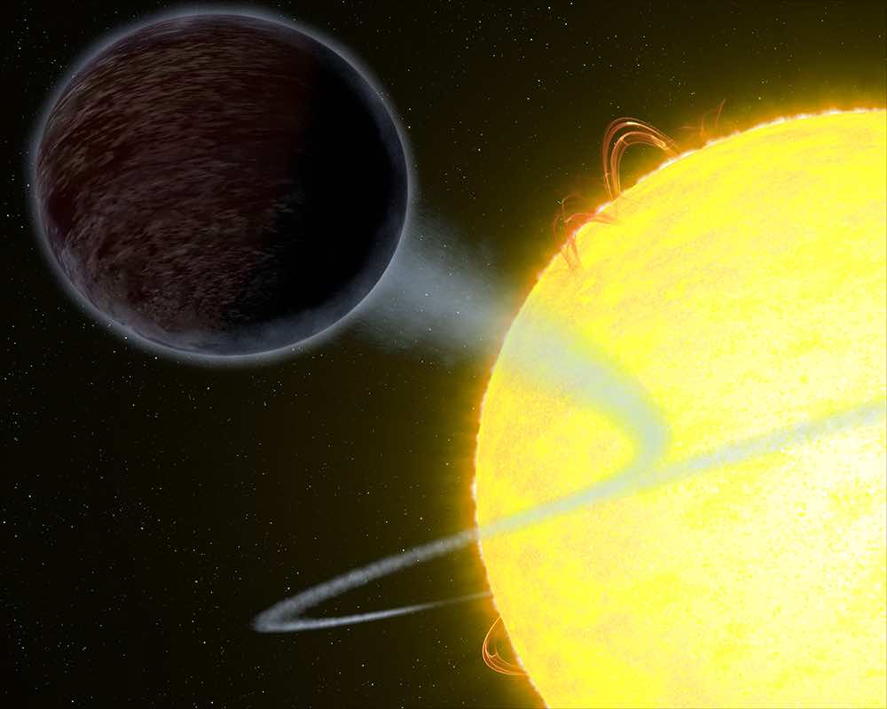
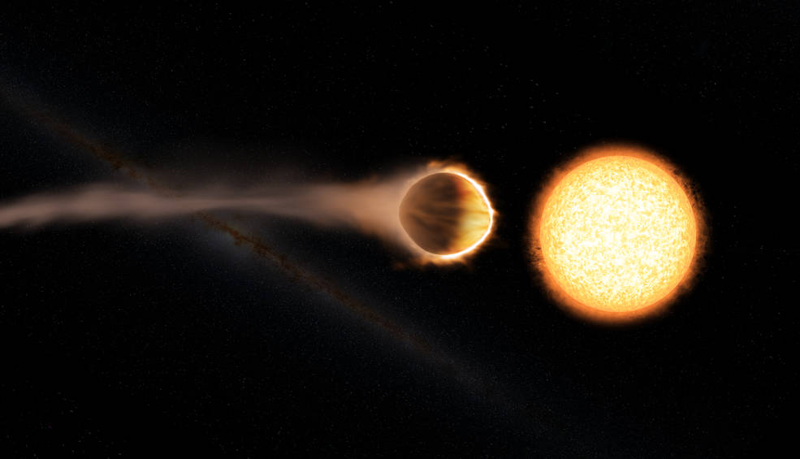
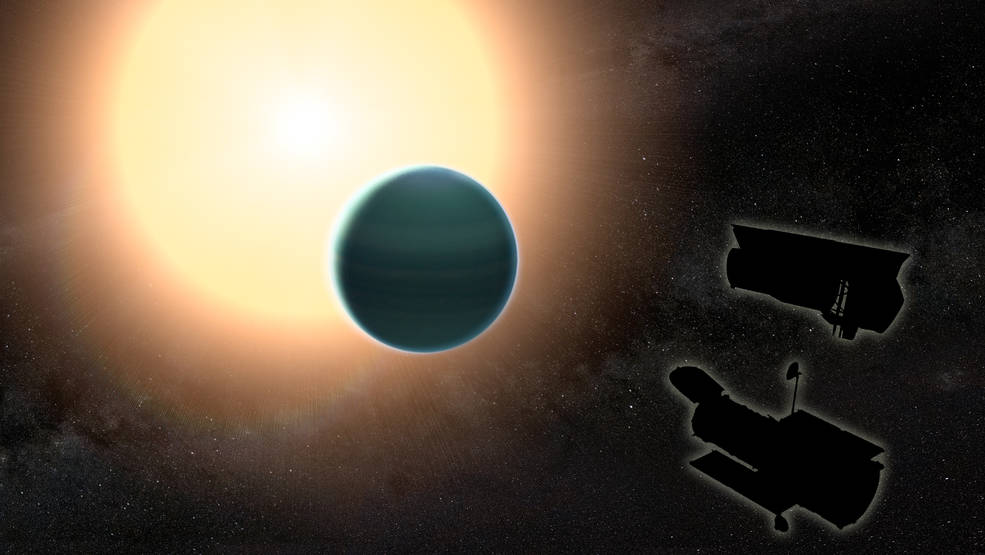
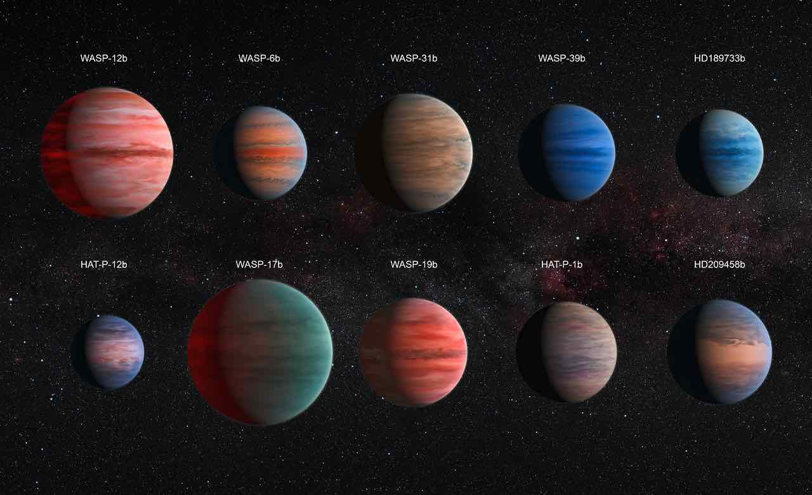
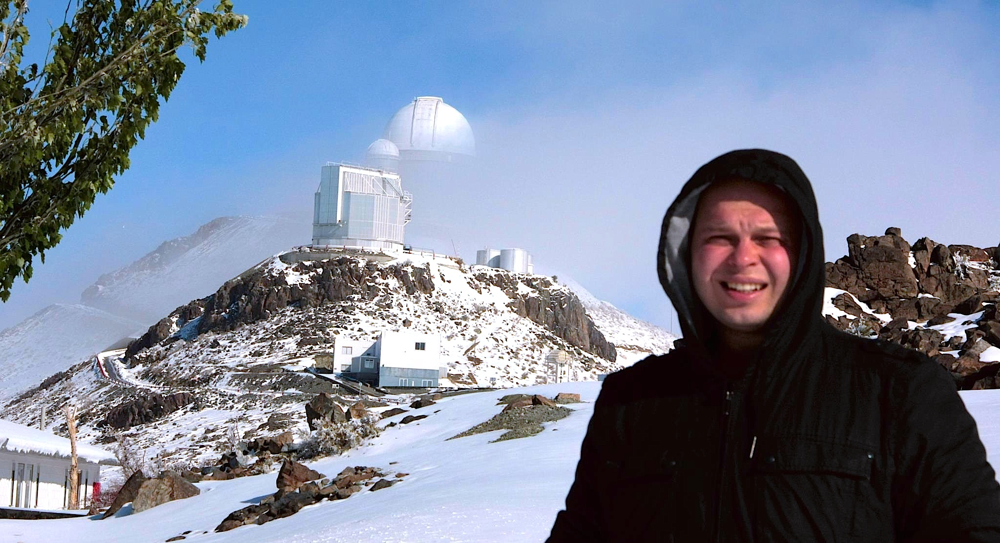

Nikolay Nikolov
I am an observational astronomer at the Space Telescope Science Institute - STScI in Baltimore.
My research focuses on the atmospheric characterization of transiting exoplanets.
I am a part of the JWST NIRCam and HST WFC3 teams,
where I perform instrument calibration and preparation for time series observations - TSOs.
Research - press releases
I am interested in the atmospheric characterization of transiting exoplanets. I lead
and contrubute to a number of programs on the ESO's Very Large and NASA's Hubble and Spitzer
Space Telescopes. Press releases, where I am the lead author or made significant contribution
are listed below.
NASA'S HUBBLE CAPTURES BLISTERING PITCH-BLACK PLANET
September 14, 2017
NASA's Hubble Space Telescope has observed a planet outside our solar
system that looks as black as fresh asphalt because it eats light rather
than reflecting it back into space. This light-eating prowess is due to
the planet's unique capability to trap at least 94 percent of the visible
starlight falling into its atmosphere.
Link to NASA press release.
Link to ApJ Letters.

Artist's view of exoplanet WASP-12b. Credits: NASA, ESA, and G. Bacon (STScI)
HUBBLE DETECTS EXOPLANET WITH GLOWING WATER ATMOSPHERE
August 2, 2017
Scientists have discovered the strongest evidence to date for a
stratosphere on a planet outside our solar system, or exoplanet.
A stratosphere is a layer of atmosphere in which temperature
increases with higher altitudes.
Link to NASA press release.
Link to Nature Letter.

Artist's view of exoplanet WASP-121b. Credits: Engine House VFX, At-Bristol Science Centre, Uo Exeter
NASA STUDY FINDS UNEXPECTEDLY PRIMITIVE ATMOSPHERE AROUND ‘WARM NEPTUNE’
May 11, 2017
A study combining observations from NASA’s Hubble and Spitzer Space
Telescopes reveals that the distant planet HAT-P-26b has a primitive
atmosphere composed almost entirely of hydrogen and helium. Located
about 437 light years away, HAT-P-26b orbits a star roughly twice
as old as the sun.
Link to NASA press release.
Link to Science Letter.

Artist's view of exoplanet HAT-P-26b. The atmosphere is unexpectedly primitive,
composed primarily of hydrogen and helium. Credits: NASA/GSFC
NASA'S HUBBLE REVEALS DIVERSITY OF EXOPLANET ATMOSPHERES
December 14, 2015
Astronomers have used the NASA/ESA Hubble Space Telescope and the
NASA Spitzer Space Telescope to study the atmospheres of ten hot,
Jupiter-sized exoplanets in detail, the largest number of such
planets ever studied. The team was able to discover why some of
these worlds seem to have less water than expected — a long-standing
mystery.
Link to NASA press release.
Link to Nature Letter.

Artist’s impression of the ten hot Jupiter exoplanets studied by
Sing, Fortney, Nikolov et al. (2016, Nature). Credits:
ESA/Hubble & NASA

I grew up in central Bulgaria in the picturesque town of Veliko Tarnovo, better
known as the “City of the Tsars”, as it was the medieval capital of the country.
My interest in astronomy started at the age of fifteen, after reading popular
ooks about the exploration of the solar system planets and how life might have
formed and evolved on Earth.
While at the gymnasium, together with other pals keen on astronomy, we
established the first astro-club in our town. This was also motivated by our
desire to take photographs during the then approaching total solar eclipse,
visible from Bulgaria on August 11 1999. The time spent at the astro-club and
gymnasium influenced my decision to later pursue physics and astronomy studies
at the university. I left Veliko Tarnovo at the age of nineteen and since then
lived in Sofia (Bulgaria), Heidelberg (Germany), Exeter (UK) and Baltimore (USA).
Outside of science I enjoy spending time with my wife and two kids, listening
to music, reading books and watching sports. I also enjoy having good time with
friends, exploring new places and taking pictures of the night sky with my
backyard telescope.
Space Telescope Science Institute,
3700 San Martin Drive,
Baltimore, MD 21218
E-mail: nnikolov (at) stsci.edu
Tel: +1 (410) 338 1010